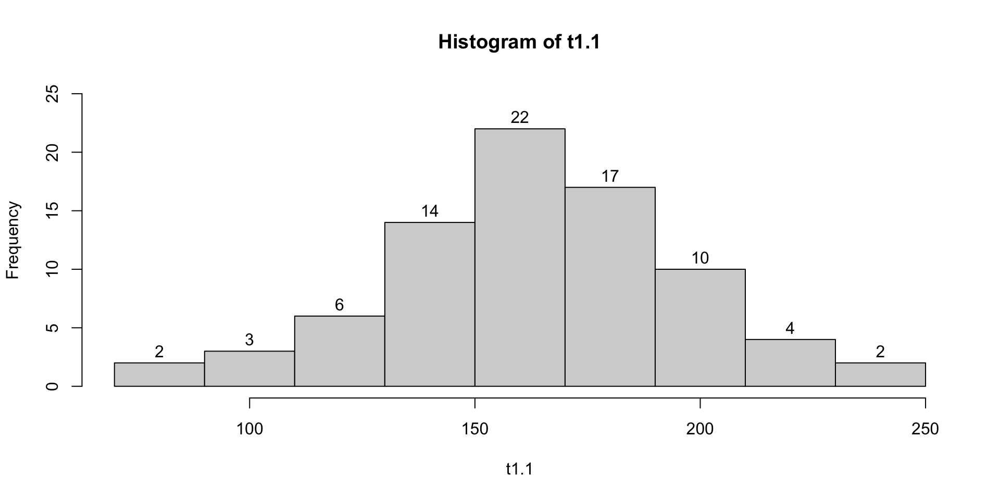

![]()
Código
[[1]]
[1] 1 1 2 5 14 42
[[2]]
[1] "Jan" "Feb" "Mar" "Apr" "May" "Jun" "Jul" "Aug" "Sep" "Oct" "Nov" "Dec"
[[3]]
[,1] [,2]
[1,] 3 1
[2,] -8 -3
[[4]]
function (x) .Primitive("asin")Estudiaremos como crear listas con la función list, como acceder a los elementos de una lista veremos un ejemplo de aplicación.
Una lista es, en términos generales, es un vector donde cada elemento puede ser de un tipo diferente.
Esta clase trata sobre cómo crear, indexar y manipular listas.
Crearemos una lista usando la función list
Nota: La función asin es la inversa de la función sin (seno), dado el seno de un angulo la función asin regresa en angulo, veamos
Después de creada la lista se le pueden asignar nombres a sus elementos con la función names, de la siguiente forma
$vec1
[1] 1 1 2 5 14 42
$meses
[1] "Jan" "Feb" "Mar" "Apr" "May" "Jun" "Jul" "Aug" "Sep" "Oct" "Nov" "Dec"
$mat1
[,1] [,2]
[1,] 3 1
[2,] -8 -3
$fun
function (x) .Primitive("asin")Nota: La función names también sirve para recuperar los nombres de los elementos de una lista, de la siguiente manera
También podemos asignar los nombres de los elementos de la lista al momento de crearla, de la siguiente forma
$vec1
[1] 1 1 2 5 14 42
$meses
[1] "Jan" "Feb" "Mar" "Apr" "May" "Jun" "Jul" "Aug" "Sep" "Oct" "Nov" "Dec"
$mat1
[,1] [,2]
[1,] 3 1
[2,] -8 -3
$fun
function (x) .Primitive("asin")Como en el caso de los vectores, matrices, y data frames las listas se pueden indexar de varias formas
Recuperamos el segundo elemento de la lista l
Recuperamos los elementos segundo y tercero de la lista l
Se da la lista l cuyo primer elemento es un vector numérico, hallar la media de los valores en el vector.
NALa función mean regresa un NA debido a que la forma de recuperar mediante l[1] regresa una lista y no un vector numérico como lo exige mean.
Cuando la lista tiene asignados nombres a sus elementos, se puede acceder a ellos mediante
note que en este caso también recuperamos una lista con el vector numérico por dentro.
[[]]Para recuperar directamente el elemento use los nombres de la siguiente forma
$Otra forma de recuperar los elementos de la lista por los nombre es mediante el signo $ de la siguiente
Se trae todos los elementos excepto el que corresponde a la posición del negativo.
Recuperar el vector 1 y calcular su media.
Si indexamos la lista con un vector lógico, obtenemos aquellos elementos de la lista que corresponden a TRUE como se muestra a continuación
Consideremos los siguientes datos
| 105 | 97 | 245 | 163 | 207 | 134 | 218 | 199 | 160 | 196 |
| 221 | 154 | 228 | 131 | 180 | 178 | 157 | 151 | 175 | 201 |
| 183 | 153 | 174 | 154 | 190 | 76 | 101 | 142 | 149 | 200 |
| 186 | 174 | 199 | 115 | 193 | 167 | 171 | 163 | 87 | 176 |
| 121 | 120 | 181 | 160 | 194 | 184 | 165 | 145 | 160 | 150 |
| 181 | 168 | 158 | 208 | 133 | 135 | 172 | 171 | 237 | 170 |
| 180 | 167 | 176 | 158 | 156 | 229 | 158 | 148 | 150 | 118 |
| 143 | 141 | 110 | 133 | 123 | 146 | 169 | 158 | 135 | 149 |

Es histo una lista ?
Qué cosas tengo dentro de esa lista?
Li Ls MC fi fir
[1,] 70 90 80 2 0.0250
[2,] 90 110 100 3 0.0375
[3,] 110 130 120 6 0.0750
[4,] 130 150 140 14 0.1750
[5,] 150 170 160 22 0.2750
[6,] 170 190 180 17 0.2125
[7,] 190 210 200 10 0.1250
[8,] 210 230 220 4 0.0500
[9,] 230 250 240 2 0.0250 Li Ls MC fi fir Fi Fir
[1,] 70 90 80 2 0.0250 2 0.0250
[2,] 90 110 100 3 0.0375 5 0.0625
[3,] 110 130 120 6 0.0750 11 0.1375
[4,] 130 150 140 14 0.1750 25 0.3125
[5,] 150 170 160 22 0.2750 47 0.5875
[6,] 170 190 180 17 0.2125 64 0.8000
[7,] 190 210 200 10 0.1250 74 0.9250
[8,] 210 230 220 4 0.0500 78 0.9750
[9,] 230 250 240 2 0.0250 80 1.0000| Li | Ls | MC | fi | fir | Fi | Fir |
|---|---|---|---|---|---|---|
| 70 | 90 | 80 | 2 | 0.0250 | 2 | 0.0250 |
| 90 | 110 | 100 | 3 | 0.0375 | 5 | 0.0625 |
| 110 | 130 | 120 | 6 | 0.0750 | 11 | 0.1375 |
| 130 | 150 | 140 | 14 | 0.1750 | 25 | 0.3125 |
| 150 | 170 | 160 | 22 | 0.2750 | 47 | 0.5875 |
| 170 | 190 | 180 | 17 | 0.2125 | 64 | 0.8000 |
| 190 | 210 | 200 | 10 | 0.1250 | 74 | 0.9250 |
| 210 | 230 | 220 | 4 | 0.0500 | 78 | 0.9750 |
| 230 | 250 | 240 | 2 | 0.0250 | 80 | 1.0000 |
La media calculada a partir de datos agrupados en un histograma se calcula con la siguiente formula \[\bar{X}_a=\frac{\sum_{i=1}^k M_i\times f_i}{n}\] Donde \(M_i\) es la marca de la clase \(i\), \(f_i\) es la frecuencia, \(n\) es el numero de datos y \(k\) es el numero de intervalos. Recordemos que \(n=\sum f_i\).
A continuación se implementa la formula en R
La media de los datos sin agrupar es 162.6625, se observa que no hay mucha diferencia entre las dos medias, por lo tanto la media calculada a partir de los datos agrupados en el histograma es una buena aproximación de la media real de los datos.
Calcular la varianza a partir de los datos agrupados y compararla con la varianza de los datos sin agrupar.
Nota: La varianza con datos agrupados se obtiene con la siguiente formula \[S^2_a=\frac{\sum(M_i-\bar X_a)^2\times f_i }{n-1}=\frac{\sum M^2_if_i-n\bar X_a^2}{n-1}\]